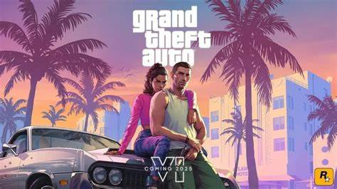

GTA 5 e GTA 6 - História, Criação e Curiosidades
Grand Theft Auto, ou simplesmente GTA, é uma das franquias mais populares e influentes da história dos videogames. Criada pela Rockstar Games, a série é conhecida por sua jogabilidade de mundo aberto, que permite ao jogador explorar livremente cenários inspirados em cidades reais, enquanto realiza missões variadas e interage com personagens carismáticos e controversos.
Neste artigo, vamos falar sobre dois dos jogos mais recentes e esperados da franquia: GTA 5 e GTA 6. Vamos conhecer um pouco sobre a história, a criação, as curiosidades e o futuro desses títulos, que prometem muita diversão e emoção para os fãs de GTA.

GTA 5
GTA 5 é o quinto jogo da série principal de Grand Theft Auto, lançado em 2013 para PlayStation 3 e Xbox 360, e posteriormente para PlayStation 4, Xbox One e PC. O jogo se passa na cidade fictícia de Los Santos, baseada em Los Angeles, e acompanha a vida de três protagonistas: Michael, Franklin e Trevor, que se envolvem em diversos crimes e conflitos.
O jogo foi um enorme sucesso de crítica e público, sendo considerado um dos melhores jogos de todos os tempos. GTA 5 possui 7 recordes no Guinness, incluindo o de propriedade do entretenimento a atingir mais rápido a marca de US$ 1 bilhão1. A estimativa é que o custo de desenvolvimento e marketing de GTA 5 seja de US$ 265 milhões1. O maior número de jogadores simultâneos jogando Grand Theft Auto V na Steam foi de 360 mil1.
Uma das principais novidades de GTA 5 foi o modo online, que permite aos jogadores criarem seus próprios personagens e participarem de diversas atividades cooperativas ou competitivas com outros jogadores ao redor do mundo. O modo online recebeu constantes atualizações e conteúdos adicionais, mantendo o jogo vivo e relevante por anos.
Para saber mais sobre GTA 5, clique aqui.

GTA 6
GTA 6 é o próximo jogo da série principal de Grand Theft Auto, anunciado oficialmente pela Rockstar Games em novembro de 2023, após anos de rumores e especulações. O jogo ainda não tem uma data de lançamento confirmada, mas espera-se que seja lançado para PlayStation 5, Xbox Series X|S e PC.
Pouco se sabe sobre o jogo, mas o primeiro trailer oficial de GTA 6 será revelado no começo de dezembro de 2023, em comemoração ao aniversário de 25 anos da Rockstar2. GTA 6 promete ser um dos jogos mais aguardados da história dos games, e um dos mais ambiciosos e inovadores da franquia.
Algumas das novidades esperadas para GTA 6 são: o uso da tecnologia de ray tracing, que permite uma exibição de reflexos, iluminação e sombras mais realistas e dinâmicas2; a presença de uma unidade de armazenamento SSD, que reduz os tempos de carregamento e melhora a performance do jogo3; e a possibilidade de trocar as placas do console por diferentes cores, como preto, vermelho, rosa, azul e roxo45.
Para saber mais sobre GTA 6, clique aqui.